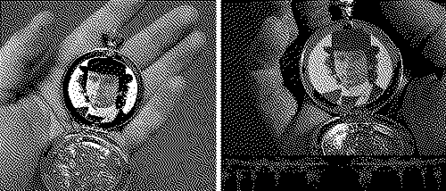

Starter Started!
Hi...
January felt like such a long and chaotic month. Even putting aside world events (lol), Glasgow has been dealing with insanely crap weather, I broke a tooth on a piece of popcorn that's going to have to be pulled while I was playing Phantasmagoria, and as of this moment the water to our flat is hopefully being restored after being out all day yesterday. The train station nearest our flat is closed for the next few months for rail improvements, which is an extra layer of inconvenience, I'm trying to get rid of the plantar warts on the bottom of my feet, I picked up trying to learn chess due to reading March Comes in Like a Lion but gave up almost immediately. And I'm querying my second novel (more like a novella) so the grinding indifference of that process can also be exhausting.
A lot of good things happened as well, of course! We stretched the known limits of a thirtysomething year old body by going to a Destroy Boys concert on a Monday night, I met up with Holly, Tom, and Stephen's parents while they were in town, and I've gotten back on volunteering with Glasgow Zine Library, which is a lot of fun. I've been chipping away at The Man Without Qualities, though slowing down now that I "only" have 150 pages of it left. If you like this blog you probably have some appreciation for dithered art styles, so I was happy to play the new chapter of Misericorde too. And Phantasmagoria is ok, lots of crazy multimedia house to wander around despite not quite activating the same homoerotic werewolf obsession Gabriel Knight 2 did for me last year.

Left, my recreation of the locket in-game, right.
We're rewatching a lot of David Lynch stuff just because his death feels like a huge loss to weirdo culture. You can follow along on my letterboxd; most recently I was impressed by the anti-family articulations of Fire Walk With Me, and how Lost Highway, though not my fave, similarly captured the psychological impotence of jealousy and murderous possessiveness in a fascinating way, and served as kind of a simpler version (for me anyways) of the logic of later nonlinear plotlines and character doubles in his later work.
Of course, if you have already rewatched all of David Lynch's work and want something else that captures the rot of American society, there's always the bonkers shorts-style feature length film: Found A Homeless Billionaire Husband for Christmas, which me and Stephen watched this month. Or, if you need the reassurance that it was kind of always this bad, with a side helping of mild psychosexual toxic yuri/what are you even doing Ann, there's always America's Next Top Model's classic Cycle 3, from 2004.
Ok so, enough chatting. What's up with this new blog? This is kind of a test post, A) to make sure I have a good flow for posting with Strawberry Starter, the new template by Kate Bagenzo that this blog is running on (she also helped me with some CSS tweaks to get it looking juuuust like the old version, but also better!) and B) to stretch my legs wrt writing more and more freely on a blog again.
I stopped writing crit due to a combination of art/game world burnout, feeling basically like a marginal mascot rather than a serious writer to people who pore over the latest remake or whatever all day, but also going deep into the hole of long format fiction writing, drafting and editing basically two novels and bringing one to publication (Oma also wrote about my book in one of her sick zines, which is another inspiration for me to get back to both more freeform and critical writing). While I still kind of hate/resent gamescrit and the art world (in the art bookstore having a moment of vertigo upon seeing how many books come from repeatedly milking the same few people for overdesigned, wide-margined Beautiful Objects that come in at 180 spaffed off pages max) I still feel like I want to produce writing that is a record of my impressions, values and interests without being strictly novelistic.
Plus I was already feeling kind of down about how, through the lists and general site culture, it seems like Bluesky has basically speedrun to having the most boring, mainstream site monoculture possible. It's another truth that I stopped writing as much crit when I disengaged from Twitter simply because I saw significantly less dumb shit I felt compelled to respond to. But most of the stuff on Bluesky feels so centralized on the same networks, popularity, and networks of popularity that in general I don't really find much I care to respond to in the first place, lol. Sometimes I feel like I'm practically shaking people by the shoulders like, look at this! It's amazing! What are you playing Balatro for??? to completely zero response. Idk! Maybe I will "find my niche" there again but until then I wanted to give blogging a shot for my ideas about novels/games/films/aesthetics/ideas no one seems to be talking about.
And regardless, a new webdev hole is a way to fill time between now and Wednesday, when I'm getting my tooth pulled, instead of just freaking out and worrying over the broken bit... or what if I go to the "stooge dentist" and they take out the wrong teeth etc well... wish me luck! 🦷 ⃠